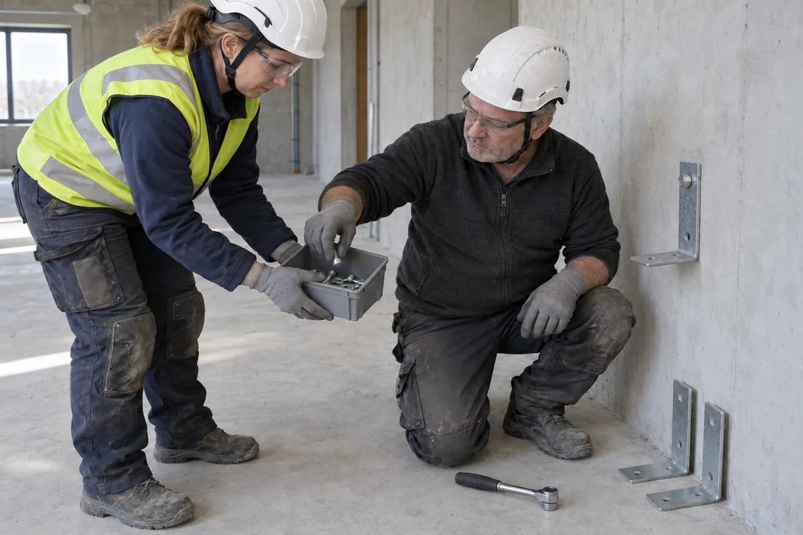

Työnjako
Työnjohto sopii, ryhmä hoitaa
Sovimme tehtävälistan, alueet ja päivittäiset prioriteetit tilaajan työnjohdon kanssa. Tehtävälistaa tarkennetaan hankkeen edetessä.
Kerro työmaastasiEtusivu / Aputyöt / Asennusryhmien apu
Aputyöryhmä toimii rakennus- ja asennusryhmien tukena. Valmistelemme työpisteitä, siirrämme tarvikkeita ja teemme sovitut avustavat työt.

Kun aputyöt hoidetaan järjestelmällisesti, työnjohto ja asennusryhmät voivat keskittyä omaan työhönsä.

Sovimme tehtävälistan, alueet ja päivittäiset prioriteetit tilaajan työnjohdon kanssa. Tehtävälistaa tarkennetaan hankkeen edetessä.
Kerro työmaastasiTyöntekijöillämme on korkealla työskentelyn koulutus sekä Valttikortti ja työturvallisuuskortti. Työtehtävästä, perehdytyksestä ja tarvittavista luvista sovitaan työmaakohtaisesti ennen aloitusta.
Ryhmän koon, työaikojen ja tehtävien muutoksista sovitaan työmaan vaiheen ja tarpeen mukaan.